num_weeks <- 1e5
positions <- rep(0,num_weeks)
current <- 10
for (i in 1:num_weeks) {
# record current position
positions[i] <- current
# flip coin to generate proposal
proposal <- current + sample(c(-1,1), size=1)
# now make sure he loops around the archipelago
if (proposal < 1) proposal <- 10
if (proposal > 10 ) proposal <- 1
# move?
prob_move <- proposal/current
current <- ifelse(runif(1) < prob_move, proposal, current)
}Ch 9: Markov Chain Monte Carlo
NoteChapter Overview
Introduces the fundamentals of Markov chain Monte Carlo (MCMC). Covers algorithms such as Metropolis, Gibbs sampling, and Hamiltonian Monte Carlo algorithms.
ulam function in rethinking package introduced - it uses the Stan Hamiltonian Monte Carlo engine to fit models.
General advice about setting up MCMC and diagnosing poor MCMC fits.
TipTerms
- Markov Chain Monte Carlo
-
stochastic process to estimate the posterior probability distributions
- Stan
-
probabilistic programming language implementing statistical inference
- Metropolis algorithm
-
MCMC algorithm (King Markov’s islands) used to generate samples from complex probability distributions without knowing its normalizing constant, requiring only that the relative probability density between two points can be calculated.
Slow, random-walk behavior
- Gibbs sampling
-
MCMC algorithm that breaks complex multidimensional joint distribution into simpler conditional distributions for each variable, updating each parameter one at a time and conditioning on the most recent values of all other parameters.
- concentration of measure
-
most of the probability mass of a high-dimension distribution is always very far from the mode of the distribution
- Hamiltonian Markov Chain
-
MCMC algorithm that uses the gradients of a target probability density to efficiently sample from continuous distributions. Simulates mechanics from physics (Skate Park Bowl) to avoid the slow random-walk behavior of Metropolis.
- gradient
-
a vector that contains all the partial derivatives of a multi-variable function. It represents the direction of steepest ascent and the rate of change of that function at any given point
- leapfrog steps
-
Discrete steps of some small interval \(\epsilon\)
- step size
-
\(\epsilon\) of leapfrog steps
- U-turn problem
-
when a simulated physical trajectory starts to double back and retrace its path in parameter space
- trace plot
-
plots Markov chain samples in sequential order, joined by a line. Useful for diagnosing common problems with HMC algorithm
- trace rank (trank) plot
-
Markov chain visualization that plots the distribution of all the samples for each individual parameter and ranks them (lowest sample gets Rank 1; largest sample gets max rank=No. samples across all chains). Draws histogram of these ranks for each individual chain.
- Effective Sample Size
- Estimate of the number of independent samples from the posterior distribution
Moving away from quap maximal approximatization, we’ll instead produce samples directly from the joint posterior without assuming a Gaussian, or any other, shape, for it.
Pros: escape awkwardness of assuming multivariate normality; ability to estimate models (GLM, Multilevel models)
Cons: less efficient estimation computation, as well as more effort to specify the model
Simulate King Markov’s Islands journey
Contract: King Markov must visit each island in proportion to its population size.
Advisor Metropolis’s Algorithm
- Flip a coin to choose island on left or right (1/2, 1/2). Call it the “proposal” island (the coin proposes that he moves to certain island)
- Find population of proposal island, say the right-side island, \(p_n\)
- Find population of current island, \(p_{n-1}\)
- Move to proposal, with probability \(\frac{p_n}{p_{n-1}}\)
- Repeat from (1)
This procedure ensures visiting each island in proportion to its population, in the long run.
par(mfrow=c(1,2))
plot(1:100, positions[1:100], col=rangi2, xlab="week", ylab="island")
plot(table(positions), col=rangi2, xlab="island", ylab="number of weeks")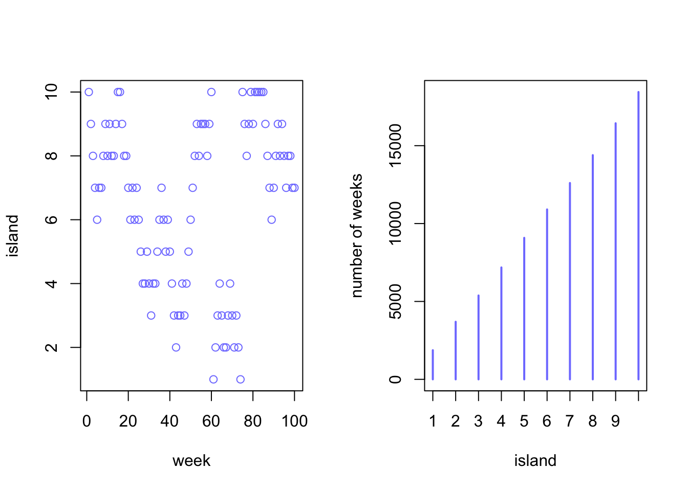
After the entire 100,000 weeks (2000 years approx) of the simulation, the proportion of time spent on each island converges to be almost exactly proportional to the relative populations of the islands.
Still works when we allow king to be equally likely to propose a move from any island to any island (not just neighbors). Key: King uses the ratio of the proposal island’s population to the current island’s as his probability of moving.
Still works with unknown number of islands. Key: king needs to know at any point in time, the population of the current island and the population of proposal island
Metropolis Algorithms
Example of MCMC
Goal: draw samples from an unknown and usually complex target distribution, like a posterior probability distribution.
Islands = parameter values (discrete or continuous)
Population sizes = posterior probabilities at each parameter value
Weeks = samples taken from the joint posterior of the parameters in the model
Provided the way we choose our proposed parameter values at each step is symmetric (equal chance of proposing from A to B and from B to A) - then Metropolis algorithm eventually gives a collection of samples from the joint posterior
Gibbs sampling
Better than plain Metropolis, common in applied Bayesian statistics (though being replaced by other algorithms). Metropolis algorithm works when the proposal distribution is symmetric. Metropolis-Hastings is more general, allows asymmetric proposals (King’s coin biased toward clockwise move).
Why asymmetric proposals?
- Easier to handle parameters that have boundaries at zero (e.g., SDs)
- Allows generation of “savvy” proposals that explore posterior distribution more efficiently (i.e., ability to get an equally good image of posterior distribution in fewer steps).
Gibbs sampling: common way to generate savvy proposals more efficiently. Variant of Metropolis-Hastings algorithm that uses clever proposals. Improvement arises from adaptive proposals in which the distribution of proposed parameter values adjusts itself intelligently, depending on the parameter values at the moment
Computation depends on conjugate pairs, which are particular combinations of prior distributions and likelihoods that have analytic solutions for the posterior distribution of an individual parameter.
High-dimensional problems
Gibbs Limitations:
- Don’t want to use conjugate pairs (especially for multilevel models)
- More parameters → less efficiency with Metropolis or Gibbs sampling (tend to get stuck in small regions of the posterior for long time)
- Models with more parameters nearly always have regions of high correlation in posterior - 2+ parameters are covariates → narrow ridge of high probability combinations, both Metropolis and Gibbs make many dumb prposals of where to go next.
Proposals are generated by adding random Gaussian noise to each parameter, with SD of 0.01 (=step size)
Trade-off between step size and efficiency (proposals don’t know enough about the global shape of the posterior)
small step size: higher acceptance rate, slower chain
Larger step size: lower acceptance rate, faster chain
Concentration of measure: fact that most of the probability mass of a high-dimension distribution is always very far from the mode of the distribution
This means that the combination of parameter values that maximizes posterior probability, the mode, is not actually in a region of parameter values that are highly plausible. So, when we properly sample from a high dimensional distribution, we won’t get any points near the mode.
# demo of concentration of measure
# sample randomly from a high-dimension distribution (10dim)
D <- 10
T <- 1e3
Y <- rmvnorm(T, rep(0,D), diag(D))
# plot the radial distances from the points
rad_dist <- function(Y)sqrt(sum(Y^2))
Rd <- sapply(1:T, function(i) rad_dist(Y[i,]))
dens(Rd)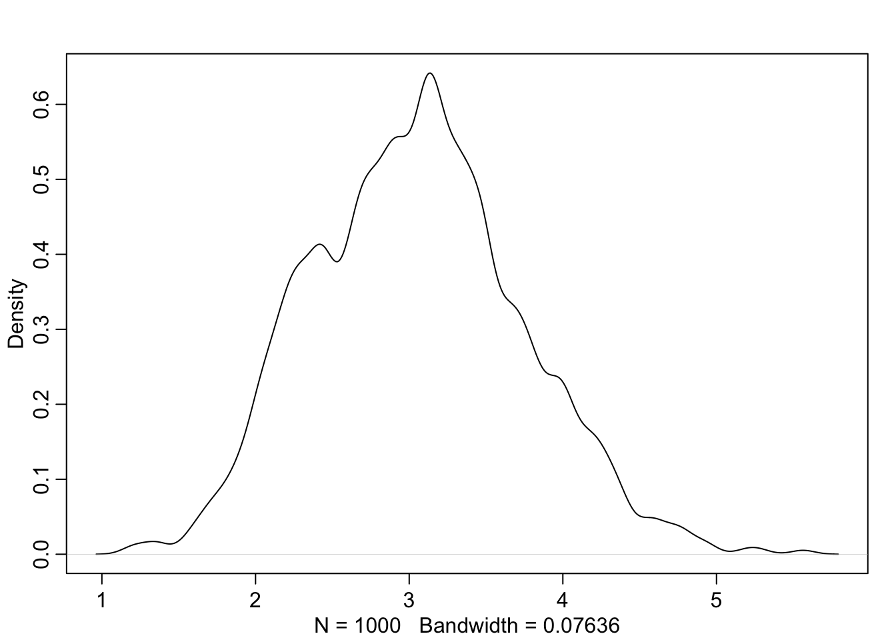
Need for other MCMC algorithms that focus on the entire posterior at once, instead of just a few dimensions at a time. Otherwise, get stuck in narrow, highly curving region of parameter space.
Hamiltonian Monte Carlo
It appears to be a quite general principle that, whenever there is a randomized way of doing something, then there is a nonrandomized way that delivers better performance but requires more thought. - ET Jaynes
Metropolis + Gibbs = highly random sampling procedures. A less random way probably exists that is better.
Hamiltonian Monte Carlo (Hybrid Monte Carlo, HMC): more computationally costly, more efficient proposals. Doesn’t need as many samples to describe posterior distribution.
Suppose the data are 100 x values and 100 y values sampled from Normal(0,1) and the model is:
\[x_i \sim \text{Normal}(\mu_x, 1)\]
\[y_i \sim \text{Normal}(\mu_y, 1)\]
\[\mu_x \sim \text{Normal}(0,0.5)\]
\[mu_y \sim \text{Normal}(0,0.5) \]
HMC needs 2 functions and 2 settings:
- (Function 1) First function computes log-prob of data and parameters (top part of Bayes formula). Tells the algorithm the “elevation” of any set of parameter values.
\[\sum_i \text{log}\;p(y_i|\mu_y , 1) + \sum_i \text{log}\;p(x_i| \mu_x ,1) +\text{log}\;p(\mu_y|0,0.5) +\text{log}\;p(\mu_x|0,0.5) \] where \(p(x|a, b)\) means the Gaussian density of \(x\) at mean \(a\) and SD \(b\).
(Function 2) Second function is the gradient = slope in all directions at the current position (=two derivatives). Differentiate the expression above with respect to \(\mu_x\) and then \(\mu_y\).
(Settings 1 and 2): Choice of number of leapfrog steps and choice of step size for each.
Each path in the simulation (curve between visits) is dvidied into the number of leapfrog steps. Many steps = long path; few steps = short path.
Size of each step is determined by step size. If step size is small =. particle turns sharply. If step size large = each leap will be large, may overshoot the point where the simulation would want to turn around.
The process repeats with random direction and momentum in both dimensions each time. With good combination of leapfrog steps and step size and with enough samples, can get an excellent approximation with very low autocorrelation.
Low autocorrelation is NOT automatic. U-Turn problem occurs when paths return close to where they started (simulations returning to same neighborhood)
Efficiency in HMC comes at the expense of having to tune leapfrog steps and step size in each application.
How to deal with U-Turns:
Stan and
rstanpackage (Fancy HMC samplers)Chooses the leapfrog steps and step size for you by conducting a warmup phase, where they try to figure out which step size explores the posterior efficiently
- Not sampling from the posterior, but just tuning the simulation.
No-U-Turn Samples (NUTS): clever algorithm to adaptively set the number of leapfrog steps. It guesses from the shape of the posterior when the path is turning around, then stops the simulation.
Overthinking: Hamiltonian Monte Carlo Raw
HMC algorithm needs 5 things:
- function
Uthat returns the negative log-probability of the data at the current position (parameter values)- a function
grad_Uthat returns the gradient of the negative log-probability at the current position.- a step size
epsilon- a count of leapfrog steps
L- a starting position
current_q
Position = vector of parameter value (Gradient also needs to return vector of same length)
Custom 2D Gaussian Example
U function expresses the log-posterior
\[\sum_i\text{log}\;p(y_i|\mu_y,1) + \sum_i \text{log}\;p(x_i|\mu_x,1) +\text{log}\;p(\mu_y|0,0.5) +\text{log}\;p(\mu_x|0,0.5) \]
# so it's just 4 calls to dnorm:
U <- function(q, a=0, b=1, k=0, d=1) {
muy <- q[1]
mux <- q[2]
U <- sum(dnorm(y, muy, 1, log=TRUE)) + sum(dnorm(x,mux,1,log=TRUE)) + dnorm(muy,a,b,log=TRUE) + dnorm(mux,k,d,log=TRUE)
return(-U)
}The derivative of the logarithm of any univariate Gaussian with mean a and SD b with respect to a is:
\[\frac{\partial\text{log N}(y|a,b)}{\partial a} = \frac{y-q}{b^2}\]
Since the derivative of a sum is a sum of derivatives:
\[\frac{\partial U}{\partial \mu_x} = \frac{\partial \text{logN}(x|\mu_x,1)}{\partial \mu_x} + \frac{\partial\text{logN}(\mu_x|0,0.5)}{\partial\mu_x} \\= \sum_i \frac{x_i - \mu_x}{1^2} + \frac{0-\mu_u}{0.5^2}\]
# gradient function
# need vector of partial derivatives of U with respect to vector q
U_gradient <- function(q, a=0, b=1, k=0, d=1){
muy <- q[1]
mux <- q[2]
G1 <- sum(y - muy) + (a - muy)/b^2 # dU/dmuy
G2 <- sum(x - mux) + (k - mux)/d^2 # dU/dmux
return(c(-G1, -G2)) # negative bc energy is neg-log-prob
}
# test data
set.seed(7)
y <- rnorm(50)
x <- rnorm(50)
x <- as.numeric(scale(x))
y <- as.numeric(scale(y))library(shape) # for fancy arrows
Q <- list()
Q$q <- c(-0.1,0.2)
pr <- 0.3
plot(NULL, ylab="muy", xlab="mux", xlim=c(-pr,pr), ylim=c(-pr,pr))
step <- 0.03
L <- 11 # 0.03/28 for U-turns --- 11 for working example
n_samples <- 4
path_col <- col.alpha("black",0.5)
points(Q$q[1], Q$q[2], pch=4, col="black")
# Copy and pasted from p. 283
for ( i in 1:n_samples ) {
Q <- HMC2( U , U_gradient , step , L , Q$q )
if ( n_samples < 10 ) {
for ( j in 1:L ) {
K0 <- sum(Q$ptraj[j,]^2)/2 # kinetic energy
lines( Q$traj[j:(j+1),1] , Q$traj[j:(j+1),2] , col=path_col , lwd=1+2*K0 )
}
points( Q$traj[1:L+1,] , pch=16 , col="white" , cex=0.35 )
Arrows( Q$traj[L,1] , Q$traj[L,2] , Q$traj[L+1,1] , Q$traj[L+1,2] ,
arr.length=0.35 , arr.adj = 0.7 )
text( Q$traj[L+1,1] , Q$traj[L+1,2] , i , cex=0.8 , pos=4 , offset=0.4 )
}
points( Q$traj[L+1,1] , Q$traj[L+1,2] , pch=ifelse( Q$accept==1 , 16 , 1 ) ,
col=ifelse( abs(Q$dH)>0.1 , "red" , "black" ) )
}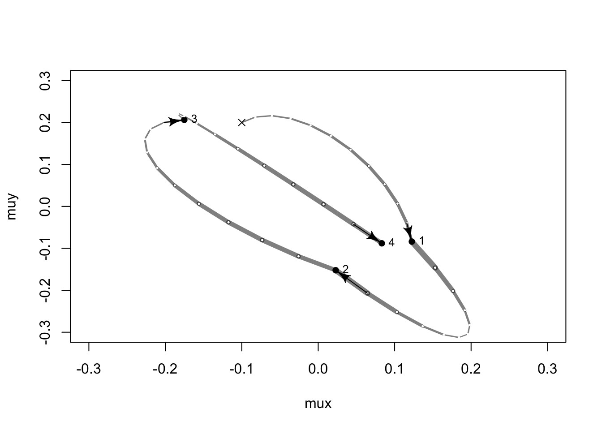
Function HMC2 is built into rethinking package.
Limitations HMC
HMC requires continuous parameters, can’t glide through discrete parameters
- Imputation of discrete missing data has to be done differently with HMC
HMC will encounter divergent transition for some difficult posterior distributions
Easy HMC: ulam
rethinking package - ulam function to compile lists of formulas (like with quap) into Stan HMC code
Housekeeping: preprocess any variable transformations, and construct a clean data list with only variables you will use.
Use same helper functions: extract.samples, extract.prior, link, sim, etc.
library(rethinking)
data(rugged)
d <- rugged
d$log_gdp <- log(d$rgdppc_2000)
dd <- d[complete.cases(d$rgdppc_2000),] # reduce data to cases with outcome variable of interest
dd$log_gdp_std <- dd$log_gdp / mean(dd$log_gdp)
dd$rugged_std <- dd$rugged / max(dd$rugged)
dd$cid <- ifelse(dd$cont_africa==1,1,2)Old interaction model with quap
m8.3 <- quap(
alist(
log_gdp_std ~ dnorm( mu , sigma ) ,
mu <- a[cid] + b[cid]*( rugged_std - 0.215 ) ,
a[cid] ~ dnorm( 1 , 0.1 ) ,
b[cid] ~ dnorm( 0 , 0.3 ) ,
sigma ~ dexp( 1 )
) , data=dd )
precis( m8.3 , depth=2 ) mean sd 5.5% 94.5%
a[1] 0.8865640 0.015674552 0.86151302 0.91161495
a[2] 1.0505666 0.009935872 1.03468714 1.06644602
b[1] 0.1324981 0.074199237 0.01391344 0.25108286
b[2] -0.1426057 0.054745410 -0.23009945 -0.05511197
sigma 0.1094859 0.005934188 0.10000194 0.11896990Preparation
Fit model using HMC, no more quadratic approximation: if the posterior distribution is non-Gaussian, we’ll get whatever non-Gaussian shape it has.
Can use the same formula list, but do two additional things
- Preprocess all variable transformations. If the outcome is transformed somehow, like by taking the logarithm, then do this before fitting the model by constructing a new var in the data frame. Likewise, if any predictor variables are transforms (e.g., including squaring and cubing to build polynomial models), then compute these transformed values before fitting the model.
- If not → wastes computing power
- Make new trimmed down data frame that contains only variables of interest. Not strict requirement, but helps avoid problems.
We already pre-transformed variables. Now, need a slim list of the vars to be used:
# Use list rather than data.frame (elements in list can be any length)
dat_slim <- list(
log_gdp_std = dd$log_gdp_std,
rugged_std = dd$rugged_std,
cid = as.integer(dd$cid)
)
str(dat_slim)List of 3
$ log_gdp_std: num [1:170] 0.88 0.965 1.166 1.104 0.915 ...
$ rugged_std : num [1:170] 0.138 0.553 0.124 0.125 0.433 ...
$ cid : int [1:170] 1 2 2 2 2 2 2 2 2 1 ...Sampling from posterior
m9.1 <- ulam(
alist(
log_gdp_std ~ dnorm(mu, sigma),
mu <- a[cid] + b[cid] * (rugged_std - 0.215),
a[cid] ~ dnorm(1,0.1),
b[cid] ~ dnorm(0,0.3),
sigma ~ dexp(1)
), data=dat_slim, chains=1
)Running MCMC with 1 chain, with 1 thread(s) per chain...
Chain 1 Iteration: 1 / 1000 [ 0%] (Warmup)
Chain 1 Iteration: 100 / 1000 [ 10%] (Warmup)
Chain 1 Iteration: 200 / 1000 [ 20%] (Warmup)
Chain 1 Iteration: 300 / 1000 [ 30%] (Warmup)
Chain 1 Iteration: 400 / 1000 [ 40%] (Warmup)
Chain 1 Iteration: 500 / 1000 [ 50%] (Warmup)
Chain 1 Iteration: 501 / 1000 [ 50%] (Sampling)
Chain 1 Iteration: 600 / 1000 [ 60%] (Sampling)
Chain 1 Iteration: 700 / 1000 [ 70%] (Sampling)
Chain 1 Iteration: 800 / 1000 [ 80%] (Sampling)
Chain 1 Iteration: 900 / 1000 [ 90%] (Sampling)
Chain 1 Iteration: 1000 / 1000 [100%] (Sampling) Chain 1 Informational Message: The current Metropolis proposal is about to be rejected because of the following issue:Chain 1 Exception: normal_lpdf: Scale parameter is 0, but must be positive! (in '/var/folders/ps/vyzw7nlj3pq0nhzg43cd1cjc0000gn/T/RtmpeffG1a/model-10b964d31e42d.stan', line 19, column 4 to column 39)Chain 1 If this warning occurs sporadically, such as for highly constrained variable types like covariance matrices, then the sampler is fine,Chain 1 but if this warning occurs often then your model may be either severely ill-conditioned or misspecified.Chain 1 Chain 1 finished in 0.0 seconds.Underneath the
ulamhood: translates the formula list into a Stan model, and then Stan defines the sampler and does the hard partAfter messages about compiling, sampling,
ulamreturns an object that contains summary info and samples from the posterior distribution
precis(m9.1, depth=2) mean sd 5.5% 94.5% rhat ess_bulk
a[1] 0.8866340 0.016468587 0.86139787 0.91486312 1.0002930 756.0330
a[2] 1.0506553 0.009640634 1.03546273 1.06587318 1.0031907 553.8664
b[1] 0.1325226 0.077242188 0.01489931 0.25487263 0.9998140 464.5399
b[2] -0.1418860 0.054981882 -0.23247181 -0.05137775 1.0098120 533.2321
sigma 0.1118482 0.006444116 0.10194717 0.12232719 0.9983509 526.6919
Warningn_eff vs ess_bulk
Note: n_eff has been deprecated and replaced by ess_bulk. n_eff calculated the Effective Sample Size (ESS) in MCMC (crude number of independent samples it managed to get). ess_bulk measures sampling efficiency specifically at the center/bulk of a distribution (rank-normalized)
Rhat is complicated estimate of the convergence of the Markov chains to the target distribution. Should approach 1.00 from above, when all is well.
Sampling again, in parallel
Since this is an easy problem, 1000 samples is enough for accurate inference. (In fact, as few as 200 is effective for good posterior approx). But want to run multiple chains for other reasons (next section).
Run four independent Markov chains and distribute them across separate cores in your computer → chains= and cores= argument
m9.1 <- ulam(
alist(
log_gdp_std ~ dnorm(mu, sigma),
mu <- a[cid] + b[cid] * (rugged_std - 0.215),
a[cid] ~ dnorm(1,0.1),
b[cid] ~ dnorm(0,0.3),
sigma ~ dexp(1)
), data=dat_slim, chains=4, cores=4
)# show() reminds you of model formula and how long each chain ran for:
show(m9.1)Hamiltonian Monte Carlo approximation
2000 samples from 4 chains
Sampling durations (seconds):
chain_id warmup sampling total
1 1 0.02 0.01 0.03
2 2 0.02 0.01 0.03
3 3 0.01 0.01 0.03
4 4 0.01 0.01 0.03
Formula:
log_gdp_std ~ dnorm(mu, sigma)
mu <- a[cid] + b[cid] * (rugged_std - 0.215)
a[cid] ~ dnorm(1, 0.1)
b[cid] ~ dnorm(0, 0.3)
sigma ~ dexp(1)There were 2000 samples from all four chains because each 1000 sample chain uses by default the first half of the samples to adapt.
precis(m9.1,2) mean sd 5.5% 94.5% rhat ess_bulk
a[1] 0.8863253 0.01586873 0.86027900 0.91192704 1.005838 2401.879
a[2] 1.0503469 0.01054348 1.03350049 1.06746869 1.001264 2888.507
b[1] 0.1325217 0.07744245 0.01117379 0.25708510 1.001309 2162.936
b[2] -0.1410281 0.05651196 -0.22990011 -0.04959232 1.001889 2380.297
sigma 0.1116768 0.00618057 0.10237178 0.12217610 1.000035 2232.189Look at the Effective Sample Size summary (ess_bulk): Something curious happens.
If there were only 2000 samples in total, how we can have more than 2000 effective samples for each parameter? It’s no mistake. The adaptive sampler that Stan uses is so good, it can actually produce sequential samples that are better than uncorrelated. They are anti-correlated. This means it can explore the posterior distribution so efficiently that it can beat random. It’s Jaynes’ rule in action.
Visualization
By plotting the samples, you can see how Gaussian (quadratic) the actual posterior density turned out to be:
pairs(m9.1)Warning in par(usr): argument 1 does not name a graphical parameter
Warning in par(usr): argument 1 does not name a graphical parameter
Warning in par(usr): argument 1 does not name a graphical parameter
Warning in par(usr): argument 1 does not name a graphical parameter
Warning in par(usr): argument 1 does not name a graphical parameter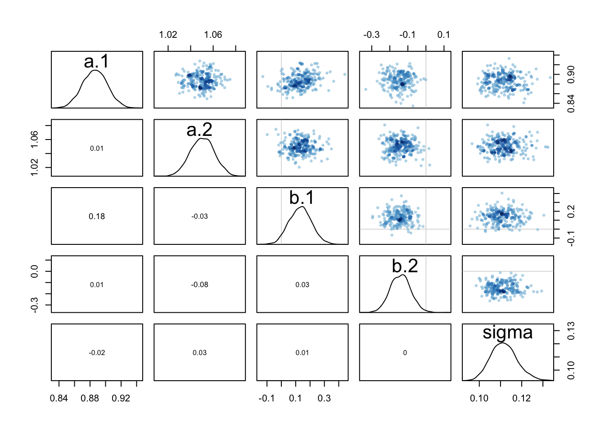
- Still a matrix of bivariate scatter plots, but we also see along the diagonal, the smoothed histogram of each parameter (with the name of parameter). Lower left triangle of matrix → correlation between each pair of parameters shown
For this model+data → posterior distribution is quite nearly multivariate Gaussian. Density for sigma is skewed in the expected direction for Gaussian as well. (Simple model structure with Gaussian priors - no surprises here)
Checking the MCMC
Trace Plot
Plots the samples in sequential order joined by a line. Best thing for diagnosing common problems in HMC (often the first check one does).
traceplot(m9.1)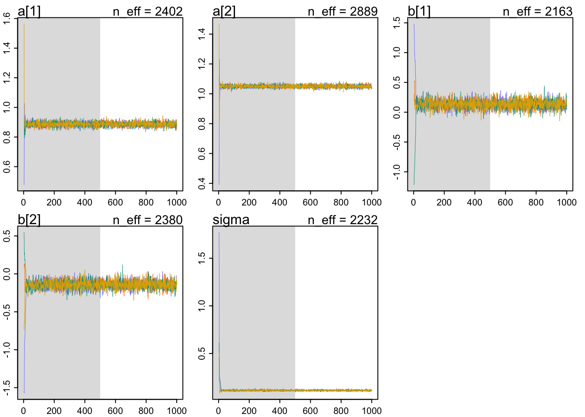
Think of the zig-zag trace of each parameter as the path the chain took through each dimension of the parameter space.
Grey region in plots = adaptation samples (500 here)
- MC is learning to more efficiently sample from the posterior distribution (thus, not reliable for inference and automatically discarded by
extract.sampleswhich returns only the samples shown in the white regions)
- MC is learning to more efficiently sample from the posterior distribution (thus, not reliable for inference and automatically discarded by
How to Diagnose Healthy Trace Plot
- Stationarity: the path of each chain staying within the same high-prob portion of the posterior distribution (all stick around stable central tendency, center of gravity of each dimension of posterior)
- mean value of the chain is stable from beginning to end
- Good Mixing: the chain rapidly explores the full region. Doesn’t slowly wander but rapidly zig-zags around
- Convergence: multiple independent chains stick around the same region of high probability
Trace Rank Plot
Markov chain visualization that plots the distribution of all the samples for each individual parameter and ranks them (lowest sample gets Rank 1; largest sample gets max rank=No. samples across all chains).
Draws histogram of these ranks for each individual chain. If chains are exploring the same space efficiently, the histograms should be similar to each other and relatively uniform.
trankplot(m9.1, n_cols = 2)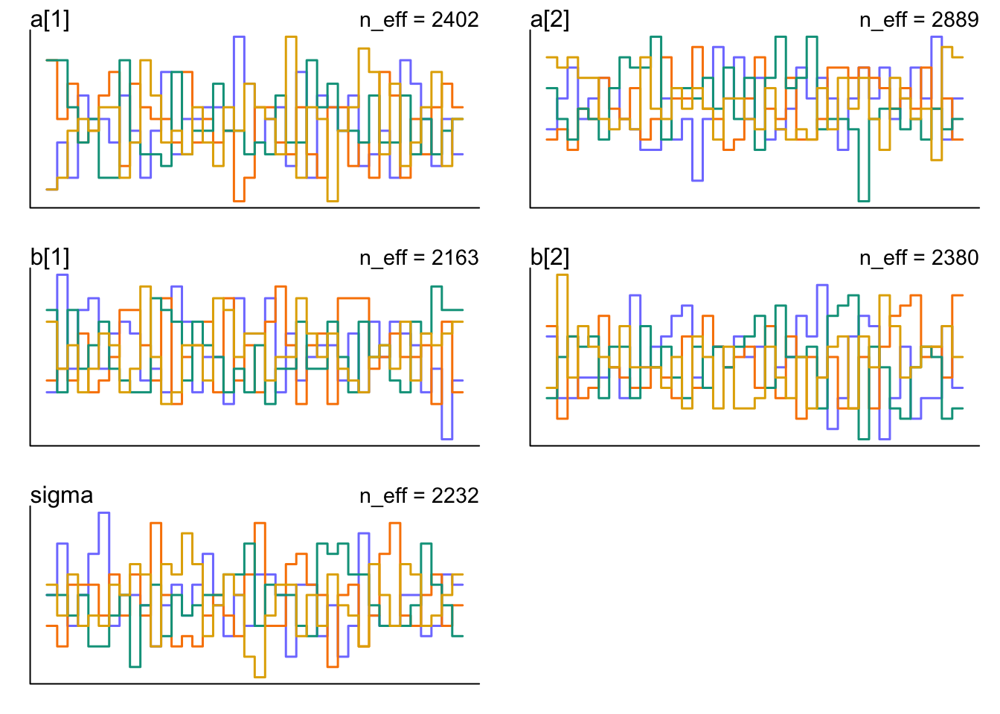
Horizontal axis = rank, from 1 to # of samples across all chains (2000 here)
Vertical axis = frequency of ranks in each bin of the histogram
Look for: histograms that overlap and stay within the same range.
Preparing and Troubleshooting Markov Chains
How many samples do you need?
Parameters iter and warmup: defaults are 1000 for iter and warmup = iter/2 (500 warmup samples, 500 real samples)
How many samples do we need for accurate inference about the posterior distribu- tion?
Effective number of samples (not raw number) is important
estimate of the number of independent samples from the posterior distribution. Markov chains are typically autocorrelated, so that sequential samples are not entirely independent. This reduces the effective number of samples.
n_effusually better than raw number of samples
What do you want to know?
If you’re only interested in the means of the posterior → then a couple hundred samples
- In most typical regression applications, you can get a very good estimate of the posterior mean with as few as 200 effective samples. And if the posterior is approximately Gaussian, then all you need in addition is a good estimate of the variance, which can be had with one order of magnitude more, in most cases.
If you’re interested in exact shape in the extreme tails of the posterior, the 99th percentile, etc. → need many more
For highly skewed posteriors, you’ll have to think more about which region of the distribution interests you. Stan will sometimes warn you about “tail ESS,” which means the effective sample size in the tails of the posterior. In those cases, it is nervous about the quality of extreme intervals, like 95%. Sampling more usually helps
How about warmup samples?
You want to have the shortest warmup possible, though more warmup can mean more efficient sampling. Varies by model.
If trouble arises, try increasing the warmup period. If not, try reducing it.
How many chains do you need?
chains= arument to specify number of independent MCs to sample from.
cores= (optional) distributed the chains across diff processors (run in parallel)
Three answers:
- When initially debugging your model, use one chain. Some error messages don’t show up unless using
chain=1(default) - When deciding whether the chains are valid, need more than one chain
- When beginning the final run that you’ll make inferences from, only need one chain
General Motto (that may not apply always):
One short chain to debug, four chains for verification and inference.
Taming a Wild Chain
Using flat priors → generates wild, wandering MC that erratically samples extremely positive and negative parameter values.
Simple Example: estimate mean and SD of two Gaussian observations, -1 and 1. Uses totally flat priors:
y <- c(-1,1)
set.seed(11)
m9.2 <- ulam(
alist(
y ~ dnorm( mu , sigma ) ,
mu <- alpha ,
alpha ~ dnorm( 0 , 1000 ) ,
sigma ~ dexp( 0.0001 )
) , data=list(y=y) , chains=3 )Running MCMC with 3 sequential chains, with 1 thread(s) per chain...
Chain 1 Iteration: 1 / 1000 [ 0%] (Warmup)
Chain 1 Iteration: 100 / 1000 [ 10%] (Warmup)
Chain 1 Iteration: 200 / 1000 [ 20%] (Warmup)
Chain 1 Iteration: 300 / 1000 [ 30%] (Warmup)
Chain 1 Iteration: 400 / 1000 [ 40%] (Warmup)
Chain 1 Iteration: 500 / 1000 [ 50%] (Warmup)
Chain 1 Iteration: 501 / 1000 [ 50%] (Sampling)
Chain 1 Iteration: 600 / 1000 [ 60%] (Sampling)
Chain 1 Iteration: 700 / 1000 [ 70%] (Sampling)
Chain 1 Iteration: 800 / 1000 [ 80%] (Sampling)
Chain 1 Iteration: 900 / 1000 [ 90%] (Sampling)
Chain 1 Iteration: 1000 / 1000 [100%] (Sampling)
Chain 1 finished in 0.0 seconds.
Chain 2 Iteration: 1 / 1000 [ 0%] (Warmup)
Chain 2 Iteration: 100 / 1000 [ 10%] (Warmup)
Chain 2 Iteration: 200 / 1000 [ 20%] (Warmup)
Chain 2 Iteration: 300 / 1000 [ 30%] (Warmup)
Chain 2 Iteration: 400 / 1000 [ 40%] (Warmup)
Chain 2 Iteration: 500 / 1000 [ 50%] (Warmup)
Chain 2 Iteration: 501 / 1000 [ 50%] (Sampling)
Chain 2 Iteration: 600 / 1000 [ 60%] (Sampling)
Chain 2 Iteration: 700 / 1000 [ 70%] (Sampling)
Chain 2 Iteration: 800 / 1000 [ 80%] (Sampling)
Chain 2 Iteration: 900 / 1000 [ 90%] (Sampling)
Chain 2 Iteration: 1000 / 1000 [100%] (Sampling)
Chain 2 finished in 0.0 seconds.
Chain 3 Iteration: 1 / 1000 [ 0%] (Warmup)
Chain 3 Iteration: 100 / 1000 [ 10%] (Warmup)
Chain 3 Iteration: 200 / 1000 [ 20%] (Warmup)
Chain 3 Iteration: 300 / 1000 [ 30%] (Warmup)
Chain 3 Iteration: 400 / 1000 [ 40%] (Warmup)
Chain 3 Iteration: 500 / 1000 [ 50%] (Warmup)
Chain 3 Iteration: 501 / 1000 [ 50%] (Sampling)
Chain 3 Iteration: 600 / 1000 [ 60%] (Sampling)
Chain 3 Iteration: 700 / 1000 [ 70%] (Sampling)
Chain 3 Iteration: 800 / 1000 [ 80%] (Sampling)
Chain 3 Iteration: 900 / 1000 [ 90%] (Sampling)
Chain 3 Iteration: 1000 / 1000 [100%] (Sampling)
Chain 3 finished in 0.0 seconds.
All 3 chains finished successfully.
Mean chain execution time: 0.0 seconds.
Total execution time: 0.4 seconds.Warning: 60 of 1500 (4.0%) transitions ended with a divergence.
See https://mc-stan.org/misc/warnings for details.precis(m9.2) mean sd 5.5% 94.5% rhat ess_bulk
alpha -0.9499028 297.2134 -418.678096 378.0868 1.137057 120.89026
sigma 403.1488376 998.1059 2.479432 1789.8791 1.145928 15.08872Can’t be right: the mean of -1 and 1 is 0, hope to get mean \(\alpha\) value of 0.
n_eff and Rhat diagnostics don’t look great either
- Took 1500 samples, but ess_bulk between 15-120.
Warning messages
Warning: 60 of 1500 (4.0%) transitions ended with a divergence. See https://mc-stan.org/misc/warnings for details.
Stan detected problems in exploring all of the posterior → divergent transitions
- These warnings are helpful - arise when the numerical simulation that HMC uses is inaccurate
Fix for simple models: increasing the
adapt_deltacontrol parameter will usually remove the divergent transitions- try adding
control=list(adapt_delta=0.99)toulamcall (default=0.95) - but doesn’t help in this case
- try adding
traceplot(m9.2)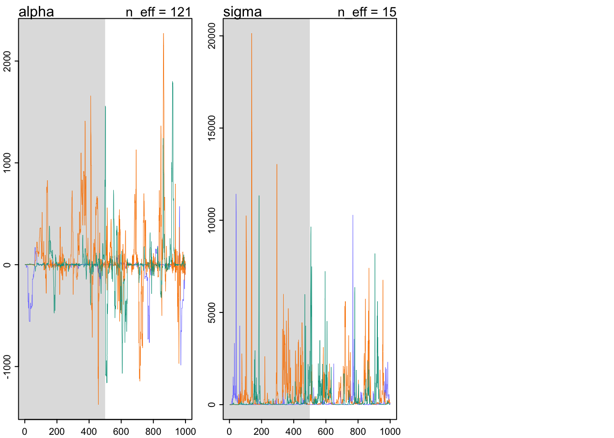
- Markov chains seem to drift around and spike occasionally at high values - not healthy
trankplot(m9.2)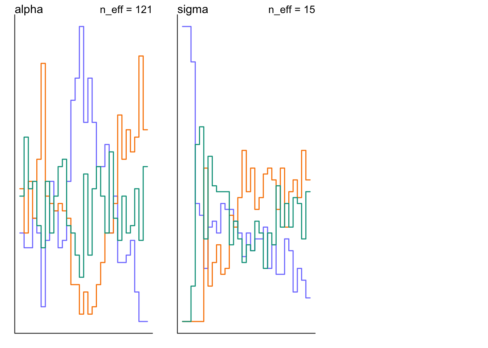
- Rank histograms spend long periods with one chain above or below the others → poor exploration of the posterior
Problems: very little data, just 2 observations, and flat priors.
- The flat priors say that every possible value of the parameter is equally plausible, a priori. For parameters that can take a potentially infinite number of values, like
alpha, this means the Markov chain needs to occasionally sample some pretty extreme and implausible values, like negative 30 million.
Taming Solution: use weakly informative priors.
set.seed(11)
m9.3 <- ulam(
alist(
y ~ dnorm(mu,sigma) ,
mu <- alpha ,
alpha ~ dnorm(1,10) ,
sigma ~ dexp(1)
) , data=list(y=y) , chains=3)Running MCMC with 3 sequential chains, with 1 thread(s) per chain...
Chain 1 Iteration: 1 / 1000 [ 0%] (Warmup)
Chain 1 Iteration: 100 / 1000 [ 10%] (Warmup)
Chain 1 Iteration: 200 / 1000 [ 20%] (Warmup)
Chain 1 Iteration: 300 / 1000 [ 30%] (Warmup)
Chain 1 Iteration: 400 / 1000 [ 40%] (Warmup)
Chain 1 Iteration: 500 / 1000 [ 50%] (Warmup)
Chain 1 Iteration: 501 / 1000 [ 50%] (Sampling)
Chain 1 Iteration: 600 / 1000 [ 60%] (Sampling)
Chain 1 Iteration: 700 / 1000 [ 70%] (Sampling)
Chain 1 Iteration: 800 / 1000 [ 80%] (Sampling)
Chain 1 Iteration: 900 / 1000 [ 90%] (Sampling)
Chain 1 Iteration: 1000 / 1000 [100%] (Sampling)
Chain 1 finished in 0.0 seconds.
Chain 2 Iteration: 1 / 1000 [ 0%] (Warmup)
Chain 2 Iteration: 100 / 1000 [ 10%] (Warmup)
Chain 2 Iteration: 200 / 1000 [ 20%] (Warmup)
Chain 2 Iteration: 300 / 1000 [ 30%] (Warmup)
Chain 2 Iteration: 400 / 1000 [ 40%] (Warmup)
Chain 2 Iteration: 500 / 1000 [ 50%] (Warmup)
Chain 2 Iteration: 501 / 1000 [ 50%] (Sampling)
Chain 2 Iteration: 600 / 1000 [ 60%] (Sampling)
Chain 2 Iteration: 700 / 1000 [ 70%] (Sampling)
Chain 2 Iteration: 800 / 1000 [ 80%] (Sampling)
Chain 2 Iteration: 900 / 1000 [ 90%] (Sampling)
Chain 2 Iteration: 1000 / 1000 [100%] (Sampling)
Chain 2 finished in 0.0 seconds.
Chain 3 Iteration: 1 / 1000 [ 0%] (Warmup)
Chain 3 Iteration: 100 / 1000 [ 10%] (Warmup)
Chain 3 Iteration: 200 / 1000 [ 20%] (Warmup)
Chain 3 Iteration: 300 / 1000 [ 30%] (Warmup)
Chain 3 Iteration: 400 / 1000 [ 40%] (Warmup)
Chain 3 Iteration: 500 / 1000 [ 50%] (Warmup)
Chain 3 Iteration: 501 / 1000 [ 50%] (Sampling)
Chain 3 Iteration: 600 / 1000 [ 60%] (Sampling)
Chain 3 Iteration: 700 / 1000 [ 70%] (Sampling)
Chain 3 Iteration: 800 / 1000 [ 80%] (Sampling)
Chain 3 Iteration: 900 / 1000 [ 90%] (Sampling)
Chain 3 Iteration: 1000 / 1000 [100%] (Sampling)
Chain 3 finished in 0.0 seconds.
All 3 chains finished successfully.
Mean chain execution time: 0.0 seconds.
Total execution time: 0.4 seconds.precis(m9.3) mean sd 5.5% 94.5% rhat ess_bulk
alpha 0.1134635 1.2621916 -1.8247023 2.102905 1.008076 404.7578
sigma 1.6212536 0.9012552 0.6695593 3.312882 1.009462 336.0080Much better.
traceplot(m9.3)
trankplot(m9.3)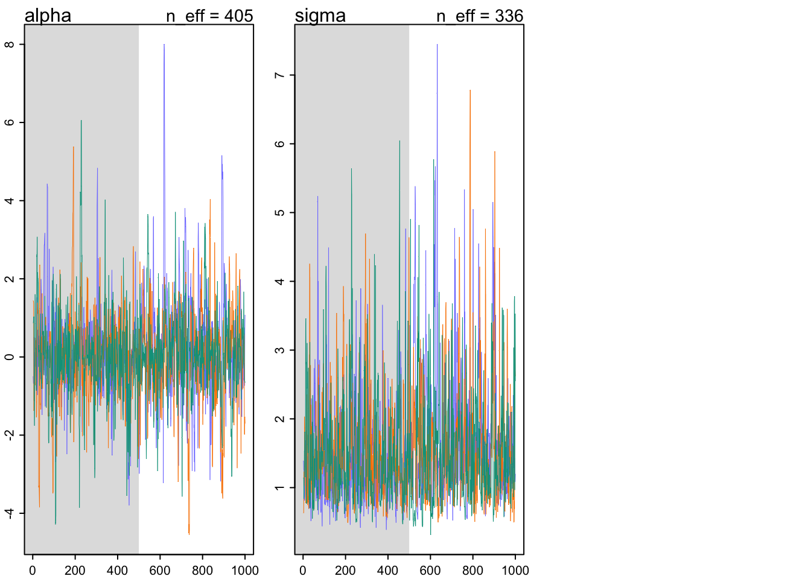
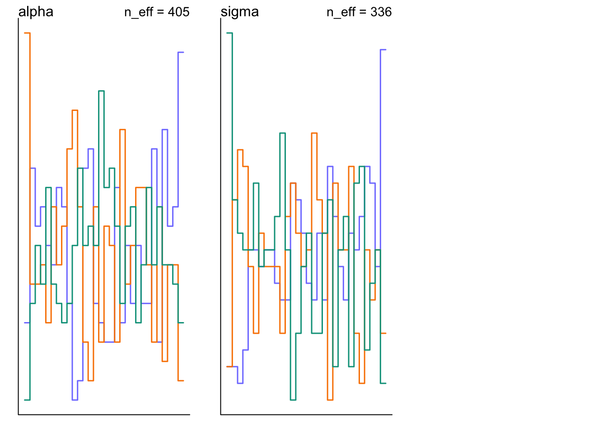
Non-identifiable Parameters
Collinearity (highly correlated predictors) can create non-identifiable parameters (Chapter 5)
# Simulate 100 observations from a Gaussian distribution with mean zero and SD 1
set.seed(41)
y <- rnorm(100,mean=0,sd=1)set.seed(384)
m9.4 <- ulam(
alist(
y ~ dnorm( mu , sigma ) ,
mu <- a1 + a2 ,
a1 ~ dnorm( 0 , 1000 ),
a2 ~ dnorm( 0 , 1000 ),
sigma ~ dexp( 1 )
) , data=list(y=y) , chains=3 )Running MCMC with 3 sequential chains, with 1 thread(s) per chain...
Chain 1 Iteration: 1 / 1000 [ 0%] (Warmup)
Chain 1 Iteration: 100 / 1000 [ 10%] (Warmup)
Chain 1 Iteration: 200 / 1000 [ 20%] (Warmup)
Chain 1 Iteration: 300 / 1000 [ 30%] (Warmup)
Chain 1 Iteration: 400 / 1000 [ 40%] (Warmup)
Chain 1 Iteration: 500 / 1000 [ 50%] (Warmup)
Chain 1 Iteration: 501 / 1000 [ 50%] (Sampling)
Chain 1 Iteration: 600 / 1000 [ 60%] (Sampling)
Chain 1 Iteration: 700 / 1000 [ 70%] (Sampling)
Chain 1 Iteration: 800 / 1000 [ 80%] (Sampling)
Chain 1 Iteration: 900 / 1000 [ 90%] (Sampling)
Chain 1 Iteration: 1000 / 1000 [100%] (Sampling)
Chain 1 finished in 0.6 seconds.
Chain 2 Iteration: 1 / 1000 [ 0%] (Warmup)
Chain 2 Iteration: 100 / 1000 [ 10%] (Warmup)
Chain 2 Iteration: 200 / 1000 [ 20%] (Warmup) Chain 2 Informational Message: The current Metropolis proposal is about to be rejected because of the following issue:Chain 2 Exception: normal_lpdf: Scale parameter is 0, but must be positive! (in '/var/folders/ps/vyzw7nlj3pq0nhzg43cd1cjc0000gn/T/RtmpeffG1a/model-10b96758a8c4.stan', line 15, column 4 to column 29)Chain 2 If this warning occurs sporadically, such as for highly constrained variable types like covariance matrices, then the sampler is fine,Chain 2 but if this warning occurs often then your model may be either severely ill-conditioned or misspecified.Chain 2 Chain 2 Iteration: 300 / 1000 [ 30%] (Warmup)
Chain 2 Iteration: 400 / 1000 [ 40%] (Warmup)
Chain 2 Iteration: 500 / 1000 [ 50%] (Warmup)
Chain 2 Iteration: 501 / 1000 [ 50%] (Sampling)
Chain 2 Iteration: 600 / 1000 [ 60%] (Sampling)
Chain 2 Iteration: 700 / 1000 [ 70%] (Sampling)
Chain 2 Iteration: 800 / 1000 [ 80%] (Sampling)
Chain 2 Iteration: 900 / 1000 [ 90%] (Sampling)
Chain 2 Iteration: 1000 / 1000 [100%] (Sampling)
Chain 2 finished in 0.6 seconds.
Chain 3 Iteration: 1 / 1000 [ 0%] (Warmup)
Chain 3 Iteration: 100 / 1000 [ 10%] (Warmup)
Chain 3 Iteration: 200 / 1000 [ 20%] (Warmup) Chain 3 Informational Message: The current Metropolis proposal is about to be rejected because of the following issue:Chain 3 Exception: normal_lpdf: Scale parameter is 0, but must be positive! (in '/var/folders/ps/vyzw7nlj3pq0nhzg43cd1cjc0000gn/T/RtmpeffG1a/model-10b96758a8c4.stan', line 15, column 4 to column 29)Chain 3 If this warning occurs sporadically, such as for highly constrained variable types like covariance matrices, then the sampler is fine,Chain 3 but if this warning occurs often then your model may be either severely ill-conditioned or misspecified.Chain 3 Chain 3 Iteration: 300 / 1000 [ 30%] (Warmup)
Chain 3 Iteration: 400 / 1000 [ 40%] (Warmup)
Chain 3 Iteration: 500 / 1000 [ 50%] (Warmup)
Chain 3 Iteration: 501 / 1000 [ 50%] (Sampling)
Chain 3 Iteration: 600 / 1000 [ 60%] (Sampling)
Chain 3 Iteration: 700 / 1000 [ 70%] (Sampling)
Chain 3 Iteration: 800 / 1000 [ 80%] (Sampling)
Chain 3 Iteration: 900 / 1000 [ 90%] (Sampling)
Chain 3 Iteration: 1000 / 1000 [100%] (Sampling)
Chain 3 finished in 0.6 seconds.
All 3 chains finished successfully.
Mean chain execution time: 0.6 seconds.
Total execution time: 1.9 seconds.Warning: 1197 of 1500 (80.0%) transitions hit the maximum treedepth limit of 10.
See https://mc-stan.org/misc/warnings for details.precis( m9.4 ) mean sd 5.5% 94.5% rhat ess_bulk
a1 -350.121054 361.22373611 -961.8128118 98.378998 2.055934 4.060437
a2 350.311866 361.22069414 -98.2170453 962.066154 2.055908 4.060530
sigma 1.054776 0.05974911 0.9587145 1.150752 1.236687 10.740867The means for
a1anda2are about the same distance from 0, but on opposite sides; SDs are massive- cannot simultaneously estimate a1 and a2 - only can estimate their sum
ess_bulk and Rhat values are terrible
Warning: 1197 of 1500 (80.0%) transitions hit the maximum treedepth limit of 10. See https://mc-stan.org/misc/warnings for details.
- Chains are inefficient because some internal limit was reached.
traceplot(m9.4)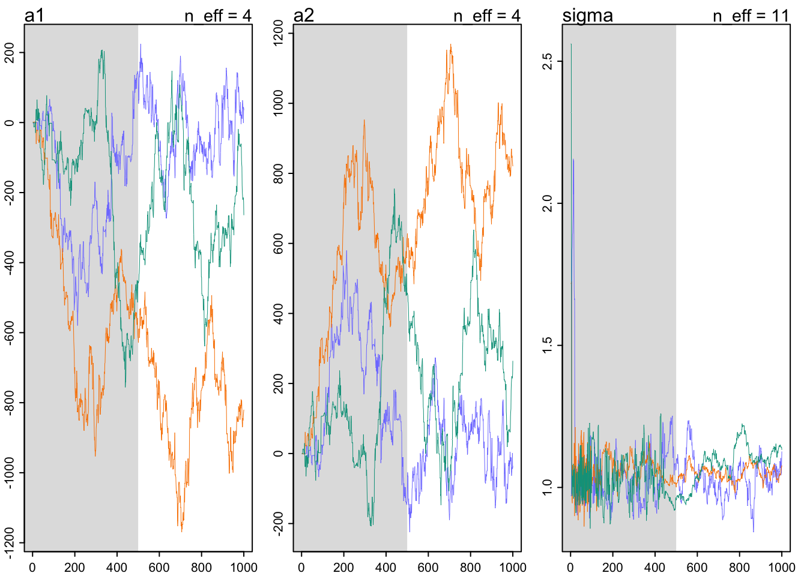
trankplot(m9.4)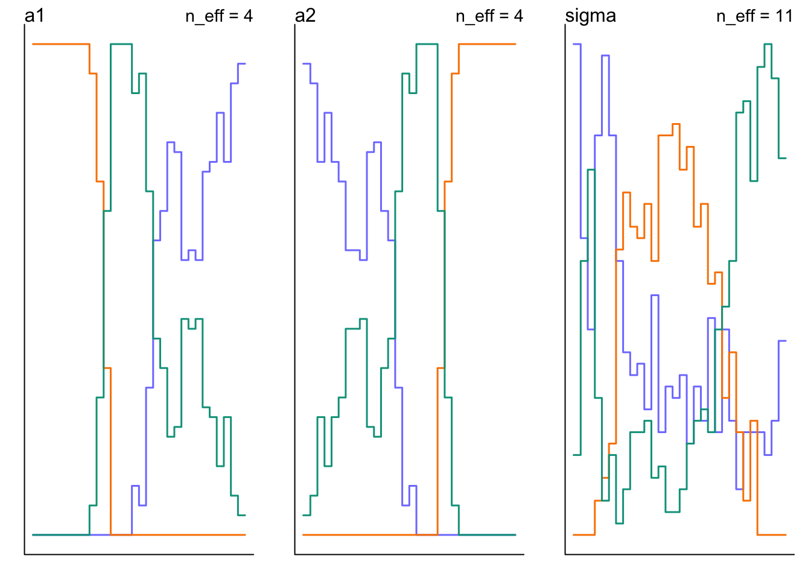
Solution, use weakly informative priors
m9.5 <- ulam(
alist(
y ~ dnorm( mu , sigma ) ,
mu <- a1 + a2 ,
a1 ~ dnorm( 0 , 10 ),
a2 ~ dnorm( 0 , 10 ),
sigma ~ dexp( 1 )
) , data=list(y=y) , chains=3 )Running MCMC with 3 sequential chains, with 1 thread(s) per chain...
Chain 1 Iteration: 1 / 1000 [ 0%] (Warmup)
Chain 1 Iteration: 100 / 1000 [ 10%] (Warmup)
Chain 1 Iteration: 200 / 1000 [ 20%] (Warmup)
Chain 1 Iteration: 300 / 1000 [ 30%] (Warmup)
Chain 1 Iteration: 400 / 1000 [ 40%] (Warmup)
Chain 1 Iteration: 500 / 1000 [ 50%] (Warmup)
Chain 1 Iteration: 501 / 1000 [ 50%] (Sampling)
Chain 1 Iteration: 600 / 1000 [ 60%] (Sampling)
Chain 1 Iteration: 700 / 1000 [ 70%] (Sampling)
Chain 1 Iteration: 800 / 1000 [ 80%] (Sampling)
Chain 1 Iteration: 900 / 1000 [ 90%] (Sampling)
Chain 1 Iteration: 1000 / 1000 [100%] (Sampling)
Chain 1 finished in 0.2 seconds.
Chain 2 Iteration: 1 / 1000 [ 0%] (Warmup)
Chain 2 Iteration: 100 / 1000 [ 10%] (Warmup)
Chain 2 Iteration: 200 / 1000 [ 20%] (Warmup)
Chain 2 Iteration: 300 / 1000 [ 30%] (Warmup)
Chain 2 Iteration: 400 / 1000 [ 40%] (Warmup)
Chain 2 Iteration: 500 / 1000 [ 50%] (Warmup)
Chain 2 Iteration: 501 / 1000 [ 50%] (Sampling)
Chain 2 Iteration: 600 / 1000 [ 60%] (Sampling)
Chain 2 Iteration: 700 / 1000 [ 70%] (Sampling)
Chain 2 Iteration: 800 / 1000 [ 80%] (Sampling)
Chain 2 Iteration: 900 / 1000 [ 90%] (Sampling)
Chain 2 Iteration: 1000 / 1000 [100%] (Sampling)
Chain 2 finished in 0.2 seconds.
Chain 3 Iteration: 1 / 1000 [ 0%] (Warmup)
Chain 3 Iteration: 100 / 1000 [ 10%] (Warmup)
Chain 3 Iteration: 200 / 1000 [ 20%] (Warmup)
Chain 3 Iteration: 300 / 1000 [ 30%] (Warmup)
Chain 3 Iteration: 400 / 1000 [ 40%] (Warmup)
Chain 3 Iteration: 500 / 1000 [ 50%] (Warmup)
Chain 3 Iteration: 501 / 1000 [ 50%] (Sampling)
Chain 3 Iteration: 600 / 1000 [ 60%] (Sampling)
Chain 3 Iteration: 700 / 1000 [ 70%] (Sampling)
Chain 3 Iteration: 800 / 1000 [ 80%] (Sampling)
Chain 3 Iteration: 900 / 1000 [ 90%] (Sampling)
Chain 3 Iteration: 1000 / 1000 [100%] (Sampling)
Chain 3 finished in 0.2 seconds.
All 3 chains finished successfully.
Mean chain execution time: 0.2 seconds.
Total execution time: 0.8 seconds.precis( m9.5 ) mean sd 5.5% 94.5% rhat ess_bulk
a1 -0.1416244 6.70720732 -11.5931919 9.906164 1.008183 417.2671
a2 0.3356675 6.70954989 -9.7347508 11.831068 1.008117 418.1378
sigma 1.0376377 0.07338983 0.9260105 1.158038 1.006245 545.5782In the end, adding some weakly informative priors saves this model. You might think you’d never accidentally try to fit an unidentified model. But you’d be wrong. Even if you don’t make obvious mistakes, complex models can easily become unidentified or nearly so. With many predictors, and especially with interactions, correlations among parameters can be large. Just a little prior information telling the model “none of these parameters can be 30 million” often helps, and it has no effect on estimates. A flat prior really is flat, all the way to infinity. Unless you believe infinity is a reasonable estimate, don’t use a flat prior. (p.302)